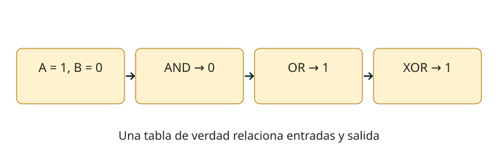

Lección 9 de 16
Circuitos integrados, lógica y operacionales
Distingue señales digitales y analógicas y resuelve puertas lógicas y amplificadores operacionales básicos.
Qué integra un circuito
Un circuito integrado reúne dispositivos y conexiones fabricados sobre un sustrato. Puede ser analógico, digital o mixto; “integrado” no significa necesariamente computadora. Las resistencias, transistores y otras estructuras internas cumplen funciones de amplificación, conmutación o referencia. Para usarlo se necesita conocer alimentación, terminales, niveles, carga y frecuencia. El nombre de una función no garantiza que dos encapsulados distintos tengan el mismo patillaje.
Señal digital y tablas de verdad
Un sistema digital interpreta intervalos de tensión como estados lógicos. No todos usan 0 V y 5 V. Una puerta NOT invierte; AND entrega 1 solo si todas sus entradas son 1; OR entrega 1 si al menos una es 1. NAND y NOR invierten las funciones AND y OR. XOR de dos entradas entrega 1 si son diferentes; XNOR, si coinciden. Escribe todas las combinaciones antes de simplificar un circuito.

Combinar puertas y almacenar estados
El álgebra de Boole describe estas operaciones. Las leyes de De Morgan permiten reemplazar una negación de AND por un OR de entradas negadas, y viceversa. Un circuito combinacional depende de sus entradas presentes; uno secuencial incluye memoria. Biestables, contadores y divisores usan estados y, normalmente, reloj. Un divisor digital puede participar en un sintetizador de frecuencia. Los retardos y la frecuencia máxima impiden tratar las puertas reales como instantáneas.
Amplificador operacional con realimentación
Un operacional amplifica la diferencia entre sus entradas + y −. Con realimentación negativa y funcionamiento lineal, esa diferencia suele ser muy pequeña. En el inversor ideal, Av = −Rf/Rin. En el no inversor, Av = 1 + Rf/Rg. El signo menos indica inversión de fase; no que la potencia sea negativa. La salida debe permanecer dentro de los márgenes de alimentación y carga; fuera de ellos las fórmulas ideales dejan de describir el circuito.
Integrador, comparador y filtros
Un integrador inversor ideal usa una resistencia de entrada y condensador de realimentación: Vout = −(1/RC)∫Vin dt, dentro de sus límites y con condiciones iniciales. En continua se requiere controlar deriva y saturación. Un comparador decide qué entrada es mayor y entrega estados de salida; no se aplica la aproximación de entradas iguales como en un amplificador lineal. Los filtros activos combinan operacionales, resistencias y condensadores para definir una respuesta.
Límites prácticos
El producto ganancia–ancho de banda, slew rate, ruido, corriente de salida y rango de modo común limitan un operacional real. Un seguidor tiene ganancia de tensión cercana a uno y alta impedancia de entrada. Desacopla la alimentación junto al integrado y no dejes entradas digitales flotantes. Antes de conectar una señal, revisa sus valores máximo y mínimo y los del circuito: los niveles de lógica y los de audio/RF no son intercambiables.
Resuelve paso a paso
Tabla de dos entradas
Con A/B = 00, 01, 10, 11: AND = 0,0,0,1; OR = 0,1,1,1; XOR = 0,1,1,0. NAND invierte los resultados de AND y NOR los de OR.
Ganancia inversora
Rin = 10 kΩ y Rf = 100 kΩ dan Av = −10. Una entrada de +0,1 V produce idealmente −1 V, si la alimentación permite esa salida y el amplificador trabaja en su banda.
Comprueba lo aprendido: ¿Se puede usar V+ ≈ V− para calcular la salida de cualquier comparador saturado?
No. Esa aproximación se usa con realimentación negativa y régimen lineal. Un comparador normalmente trabaja hacia uno de sus estados de salida.
Preguntas oficiales de este tema
Selecciona una alternativa y pulsa «Comprobar respuesta». Si fallas, podrás ver la respuesta correcta para seguir aprendiendo. Las preguntas con incidencias documentales se muestran solo para consulta y no se califican.
Continúa tu recorrido
Fuentes de estudio: programas técnicos y banco SUBTEL, apéndices A–E, versión 06/12/2020, y sus solucionarios oficiales. Reglamentación: Decreto 523, versión 21/06/2013; evaluación: Resolución Exenta 2620/2023. Revisión documental: 11/11/2026. Explicaciones, cálculos y esquemas didácticos de RUFCOM. Consultar documentos oficiales.